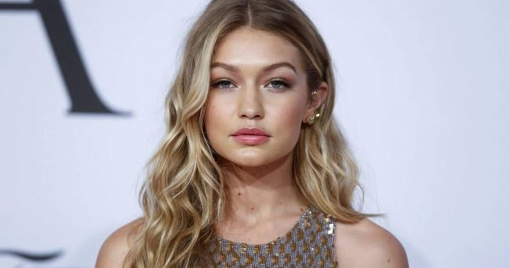

Gigi Hadid Defends Elsa Hosk's Victoria's Secret Walk: 'Y'all Have No Clue'
When a Threads user picked apart Elsa Hosk's walk at the 2026 Victoria's Secret Fashion Show, Gigi Hadid jumped in: the wings weigh 75+ pounds and stand 10+ feet tall. 'Elsa is stunning, strong, & carried these like a boss.'

Wing woman, reporting for duty.
Gigi Hadid jumped to Elsa Hosk's defense Wednesday after a Threads user took aim at the Swedish model's walk at the 2026 Victoria's Secret Fashion Show in Los Angeles. The clip showed Hosk, 37, making her way down the mirrored runway in a sheer bodysuit and massive shimmering wings spanning nearly the full width of the catwalk — looking, to the critic, cautious in her gold stilettos. One user contrasted her strut with former Angel Gisele Bündchen's.
Hadid, 31 — a fellow runway veteran who also walked this year's show — wasn't having it.
The clapback
"This really PMO," Hadid wrote in the replies. "Elsa slayed this. I'm the biggest fan of the OG Angels; but even the scale & size of this runway is not comparable to the OG shows."
Then she laid out why the modern walk is an athletic feat: "It's a looong walk in the wings these days ++ they can be 75+lbs, 10+ ft tall, sometimes animatronic, etc." — "NOT aero dynamic" even before "the gust of runway fans!!"
"It takes 3 men to take these wings off of us," she continued. "Elsa is stunning, strong, & carried these like a boss. Y'all have no clue."
The wings
The numbers back her up. Per InStyle's behind-the-scenes look with Victoria's Secret creative chief Adam Selman, Hosk's wings were described as the "biggest" pair — towering 70 inches high, built on a welded full-metal structure with individually placed fabric feathers. One of the heaviest sets of the night went to Jasmine Tookes.
This isn't new territory: after last year's show, Bella Hadid revealed her wings weighed 50 lbs.
The comeback mom
Hosk — who debuted in 2011 and was the last to wear the Fantasy Bra in 2018 — is also among the mothers returning to the runway after childbirth, having welcomed her second baby, daughter Flora Blue, in July.